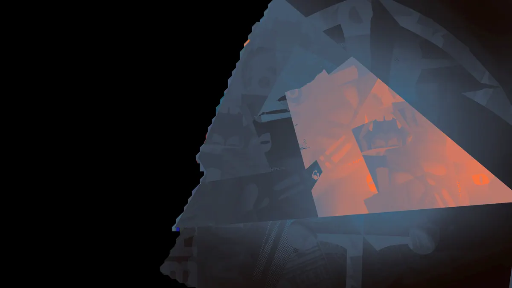

Golpe Mortal Death Slam Prende chicotes em inimigos durante um canal e então os ergue, atordoa e esmaga no chão.Mobilidade vertical e iniciações de impacto.
História
Jacob Lash é um idiota.
História oficial do jogo, traduzida automaticamente para o português.
Números reais
Habilidades
Pisoteia o chão ferindo inimigos num cone à frente e mergulha em direção ao chão se usado no ar.
Puxa Lash pelo ar até um alvo e restaura seus pulos aéreos e dashes.
Chicoteia inimigos à frente e se cura com parte do dano causado.
Prende chicotes em inimigos durante um canal e então os ergue, atordoa e esmaga no chão.
Builds mais usadas
56.999 partidas registradas com esta build.
Reforço de tiro na cabeça (800) · Explosão Mística (800) · Espírito Extra (800) · Recarga Mercúrio (1.600) · Taxa Extra (800) · Espírito Melhorado (1.600) · Vigor Extra (800) · Tiro Místico (1.600) · Caçador de talentos (3.200) · Healbane (1.600)
48.145 partidas registradas com esta build.
Reforço de tiro na cabeça (800) · Explosão Mística (800) · Espírito Extra (800) · Frente Fria (1.600) · Colecionador de Troféus (1.600) · Espírito Melhorado (1.600) · Taxa Extra (800) · Tiro Místico (1.600) · Vigor Extra (800) · Maestria de Vigor (3.200)
44.250 partidas registradas com esta build.
Explosão Mística (800) · Reforço de tiro na cabeça (800) · Espírito Extra (800) · Recarga Mercúrio (1.600) · Taxa Extra (800) · Espírito Melhorado (1.600) · Medalhão Restaurador (1.600) · Emblema do Encantador (1.600) · Rito de Cura (800) · Refutação (800)
Confrontos reais
 Mirage — 56.4% de vitória
Mirage — 56.4% de vitória Shiv — 55.8% de vitória
Shiv — 55.8% de vitória Pocket — 55.8% de vitória
Pocket — 55.8% de vitória Solomon — 55.4% de vitória
Solomon — 55.4% de vitória The Doorman — 55.3% de vitória
The Doorman — 55.3% de vitória Viscous — 55.2% de vitória
Viscous — 55.2% de vitória
 Rat King — 42.9% de vitória
Rat King — 42.9% de vitória Graves — 44.2% de vitória
Graves — 44.2% de vitória Paige — 45.2% de vitória
Paige — 45.2% de vitória Kelvin — 45.6% de vitória
Kelvin — 45.6% de vitória Seven — 45.8% de vitória
Seven — 45.8% de vitória Victor — 46.3% de vitória
Victor — 46.3% de vitória
Ver a página de counters do Lash
O que upar primeiro
Nível por nível, na ordem que os jogadores mais usam em partidas de verdade. A porcentagem mostra quantos escolheram aquela habilidade naquele nível.
Melhores duplas
Heróis que mais ganham jogando junto com ele, em partidas reais (pelo menos 1.500 partidas juntos).
- Graves58,6%
- Rat King57,6%
- Paige56,7%
- Seven56,0%
 Haze55,4%
Haze55,4%
- Pocket44,3%
- Shiv44,8%
- Mirage45,4%
Rota (lane)
Na rota, cada lado joga em dupla. Estes números são de confrontos reais: a diferença de almas é medida com o jogo já começado, então almas no verde significa que ele costuma estar na frente.
 Ivy — 43,0% de vitória −562 almas (279 partidas)
Ivy — 43,0% de vitória −562 almas (279 partidas)- Rat King — 43,2% de vitória −477 almas (28.821 partidas)
- Graves — 45,0% de vitória +500 almas (9.694 partidas)
- Paige — 45,6% de vitória +314 almas (2.218 partidas)
- Haze — 47,5% de vitória −270 almas (25.270 partidas)
 Baba — 49,0% de vitória +498 almas (2.915 partidas)
Baba — 49,0% de vitória +498 almas (2.915 partidas)- Seven — 49,1% de vitória −2 almas (4.020 partidas)
 Wraith — 49,5% de vitória −499 almas (3.381 partidas)
Wraith — 49,5% de vitória −499 almas (3.381 partidas)
 Silver — 57,6% de vitória −46 almas (1.615 partidas)
Silver — 57,6% de vitória −46 almas (1.615 partidas) Rem — 57,6% de vitória +233 almas (5.954 partidas)
Rem — 57,6% de vitória +233 almas (5.954 partidas)- Shiv — 56,9% de vitória +216 almas (2.646 partidas)
Histórico de win rate
21/09: 50.5% → 09/11: 50.2% → 28/12: 53.1% → 15/02: 51.4% → 05/04: 49.2% → 24/05: 49.5% → 12/07: 52.0% → 30/08: 51.8% → 18/10: 50.5%